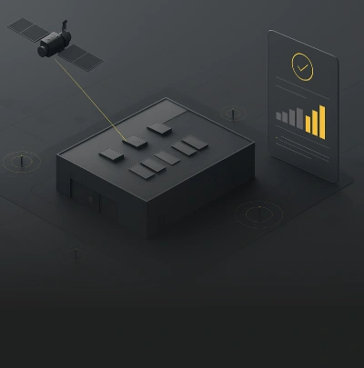
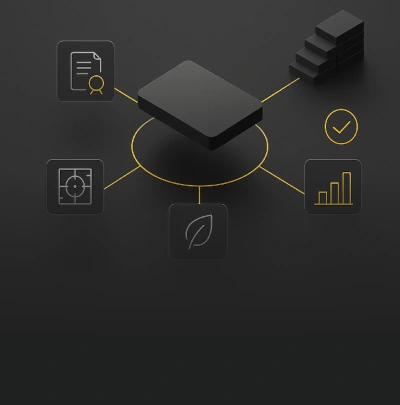
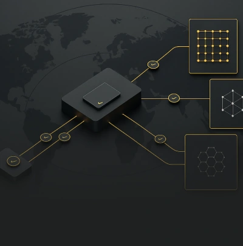

01
Geo Sentinel
Physical, geospatial and temporal verification system that records events, location and operational conditions throughout the asset’s lifecycle.
Technology in service of institutional control, not speculation. Each engine does one job and hands its output to the next, so the evidence balance is conserved at every stage.
Physical, geospatial and temporal verification system that records events, location and operational conditions throughout the asset’s lifecycle.

AI based continuous verification engine that persistently evaluates integrity, coherence and consistency of asset information.

Custody system for the asset’s verifiable history that generates a dynamic trust score from the quality, consistency and continuity of evidence.

Geo Sentinel establishes what happened and where. Aura decides whether the record holds. Pedigree keeps the whole history and turns it into a score an institution can act on.
Physical, geospatial and temporal verification system that records events, location and operational conditions throughout the asset’s lifecycle.
AI based continuous verification engine that persistently evaluates integrity, coherence and consistency of asset information.
Custody system for the asset’s verifiable history that generates a dynamic trust score from the quality, consistency and continuity of evidence.
Institutional evaluation runs in a controlled environment, with functional separation preserved end to end.